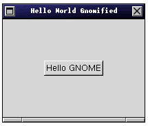

Chapter 3. Tutorial para los desarrolladores de GNOME
- Table of Contents
- Empezando con GNOME
- Añadiendo menús

De la Guía de Estilo de GNOME
Menús y Barras de Menús
La Barra de Menú debe estar presente en todas las Aplicaciones.
Todas las aplicaciones deben tener una entrada "Ayuda" en la barra de Menú.
Todos los menús necesitan al menos una entrada.
Un Menú Acerca de... debe estar disponible bajo el Menú de Ayuda y debe
abrir un pequeño dialogo mostrando por lo menos el nombre de la
aplicación, el autor, la versión y la fecha.
Un menú "Archivo" debe aparecer en todas la aplicaciones, y contener
por lo menos Salir.
Los items del menú que abran diálogos deben indicarlo con un "..."
Los items del menú que lleven submenús lo deben indicar con una flecha.
El menú de Ayuda debe estar justificado a la derecha en la Barra de Menú.
En el momento de escribir este borrador, gnome-hello usa GtkMenuFactory como forma de crear lo menús. Ésta será reemplazada por gnome-app-helper en poco tiempo. (cuando gnome_app_* tenga soporte para i18n, aceleradores y posibilidad de menús justificados a la derecha). Hasta entonces no será una explicación sobre "como" hacer los menús.
Las opciones de menú presentes en gnome-hello son sólo las obligatorias: Fichero/Salida, que usa la misma quit_cb que hemos visto en la sección anterior y Ayuda/Acerca de... que usa el widget gnome-about (ver the section called gnome-about - Widget "Acerca de..." in Chapter 6) escrito por Cesar <miquel@df.uba.ar>.
void about_cb (GtkWidget *widget, void *data) { GtkWidget *about; gchar *authors[] = { /* Here should be your names */ "Mark Galassi", "Horacio J. Peña", NULL }; about = gnome_about_new ( "The Hello World Gnomified", VERSION, /* copyright notice */ "(C) 1998 the Free Software Foundation", authors, /* another comments */ "GNOME is a civilized software system " "so we've a \"hello world\" program", NULL); gtk_widget_show (about); return; } - Internacionalización.
- Analizando parámetros.
- Gestión de sesiones
- Ayuda y documentación.
Del manual de gnome-hello:
gnome-hello es una aplicación GNOME la cuál contiene todas las características esenciales y comunes de los programas GNOME, como la inicialización, bucles de eventos, análisis del fichero de configuración, iternacionalización, etc.
gnome-hello intenta ser un ejemplo del estándard de codificación GNOME, asi como un divertido e inútil programilla.
En este capítulo vamos a usarlo para explicar las características básicas que una aplicación debe tener para ser considerada gnome-compliant.
Empezando con GNOME

Empezaremos con una aplicación muy básica. Es sólo una ventana con un botón que cuando se pulsa, cierra la ventana y visualiza "Hello GNOME". El código fuente está en programs/gnome-hello/gnome-hello-0-basic.c. [FIXME: ¿Debería incluir el código entero aquí?]
#include <config.h> #include <gnome.h> |
Todos los programas tienen que incluir gnome.h el cuál te proporciona todo lo que necesitas para usar las librerias Gtk+ y GNOME.
int
main(int argc, char *argv[])
{
|
gnome_init siempre se llama al principio de un programa. Se encarga de inicializar Gtk y GNOME.
gnome_init (&argc, &argv); |
Entonces llamamos a prepare_app que hace el trabajo real y gtk_main para entrar en el bucle principal del proceso.
prepare_app (); gtk_main (); return 0;} |
Vamos ahora al código de prepare_app...
void
prepare_app()
{
GtkWidget *button;
|
Primero hacemos la llamada a la ventana principal gnome_app_new y conectamos la señal delete_event al regreso de la llamada quit_cb, así el usuario puede cerrar la aplicación por medio del gestor de ventanas:
app = gnome_app_new ("hello", "Hello World Gnomified");
gtk_widget_realize (app);
gtk_signal_connect (GTK_OBJECT (app), "delete_event",
GTK_SIGNAL_FUNC (quit_cb), NULL);
|
Entonces, creamos un botón y lo colocamos para ser el contenido de la ventana principal.
button = gtk_button_new_with_label ("Hello GNOME");
gtk_signal_connect (GTK_OBJECT (button), "clicked",
GTK_SIGNAL_FUNC (hello_cb), NULL);
gtk_container_border_width (GTK_CONTAINER (button), 60);
gnome_app_set_contents ( GNOME_APP (app), button);
|
Finalmente, mostramos los widgets. Puede hacerse en cualquier orden, pero nosotros mostramos la ventana principal al final, de esta manera la ventana entera emergerá de una en vez de ver emerger la ventana, y luego el boton dentro de ella.
gtk_widget_show (button); gtk_widget_show (app); } |
Las llamadas de regreso (hello_cb para el botón y quit_cb para delete_event) son muy simples. Solo llaman a gtk_main_quit para salir.
void
hello_cb (GtkWidget *widget, void *data)
{
g_print ("Hello GNOME\n");
gtk_main_quit ();
return;
}
void
quit_cb (GtkWidget *widget, void *data)
{
gtk_main_quit ();
return;
}
|